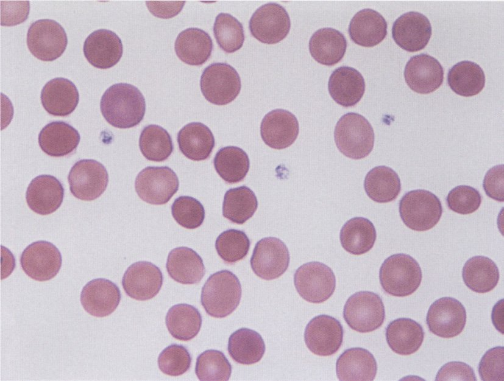
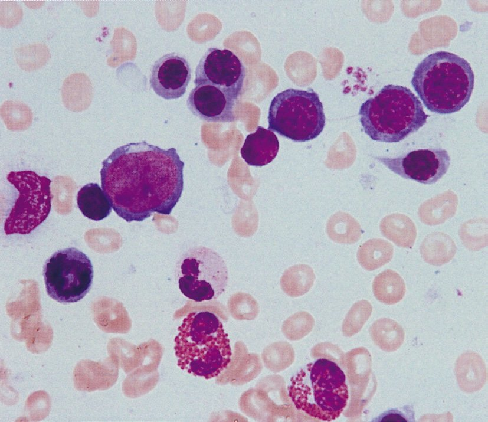
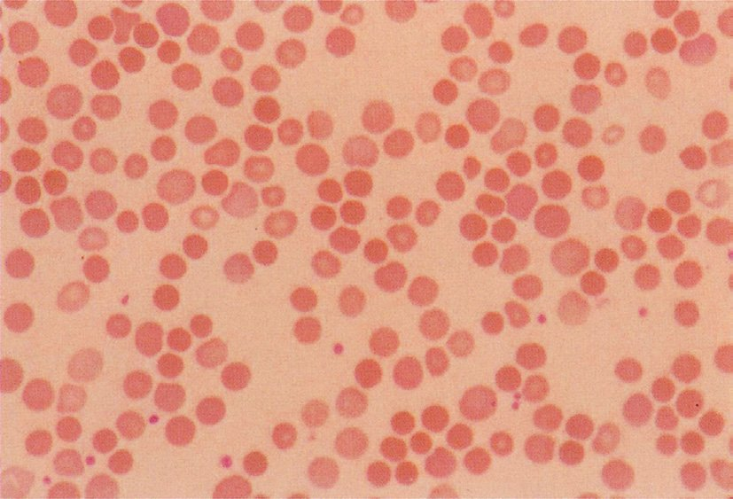
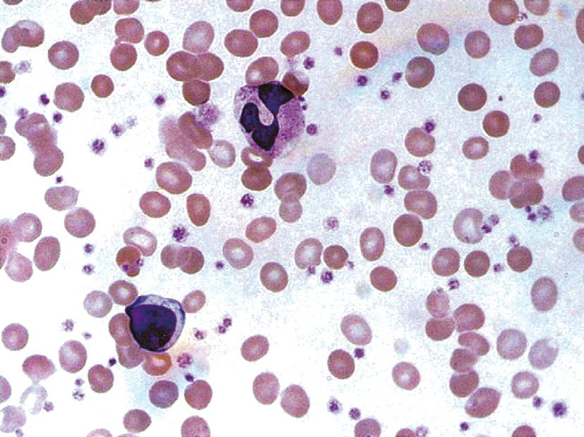
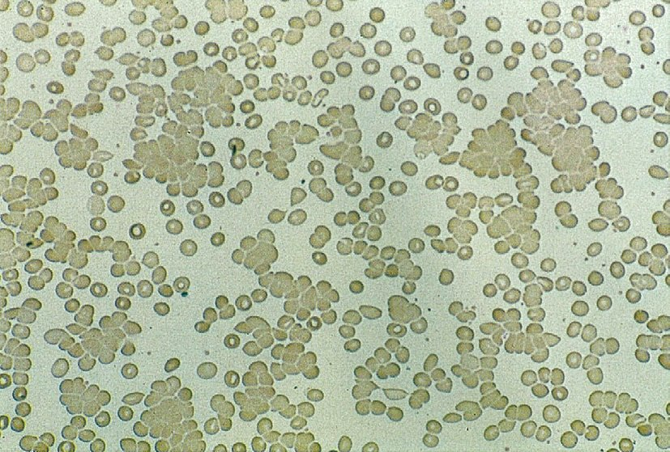
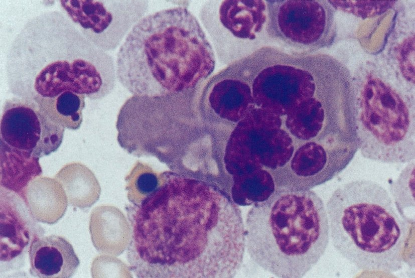
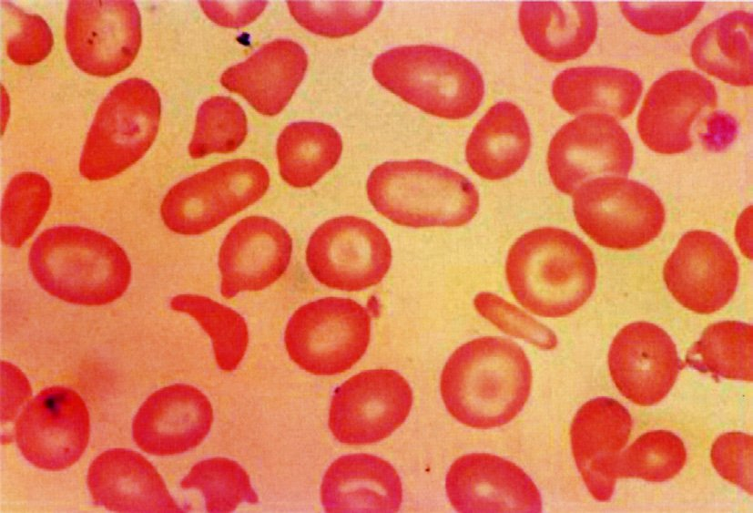
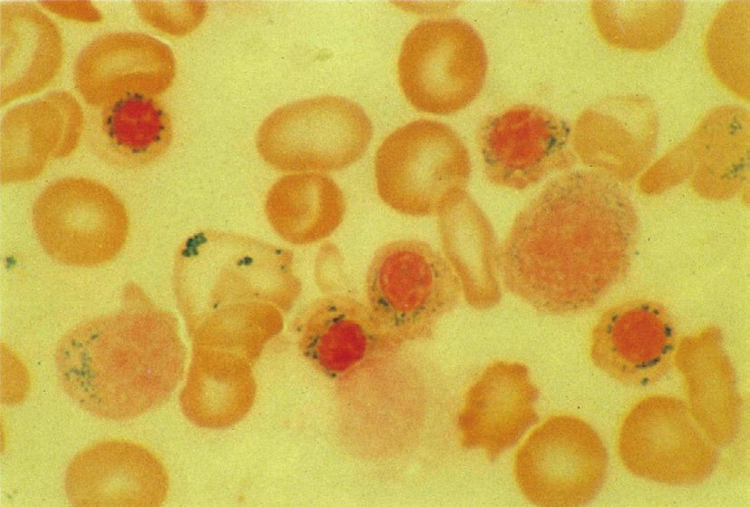

| 疾患 | 特徴的形態 |
|---|---|
| 遺伝性球状赤血球症 | 球状赤血球（Spherocyte） |
| サラセミア・肝疾患 | 標的赤血球（Target cell） |
| 鎌状赤血球症 | 鎌状赤血球（Sickle cell） |
| TTP・HUS・DIC | 破砕赤血球（Schistocyte） |
| 骨髄線維症 | 涙滴状赤血球（Teardrop） |
| PNH | 正常形態（標的赤血球ではない！） |

| 分類 | 代表疾患 |
|---|---|
| 骨髄不全 | 再生不良性貧血・MDS・白血病 |
| 溶血・消費 | PNH（溶血）・TTP/HUS |
| 脾機能亢進 | 肝硬変・門脈圧亢進症 |
| 自己免疫 | SLE（汎血球減少） |
| 検査項目 | 変化 | 理由 |
|---|---|---|
| 間接ビリルビン | ↑ | Hb分解→ビリルビン産生↑ |
| LDH | ↑ | 赤血球内酵素の漏出 |
| ハプトグロビン | ↓ | 遊離Hbと結合→消費 |
| 網赤血球 | ↑ | 骨髄の代償性増加 |
| 直接ビリルビン | 正常 | 肝機能正常なら抱合は正常 |

| 血清鉄 | 疾患 |
|---|---|
| ↓（低値） | 鉄欠乏性貧血・慢性疾患貧血（ACD） |
| ↑（高値） | 鉄芽球性貧血（ヘム合成障害）・サラセミア（溶血で鉄放出）・ヘモクロマトーシス |
| 貧血の種類 | 特徴的な症状・所見 |
|---|---|
| 溶血性 | 黄疸（間接型）・脾腫・Hb尿（血管内溶血） |
| 巨赤芽球性 | ハンター舌炎・亜急性連合変性症・好中球過分葉 |
| 鉄欠乏性 | 匙状爪・氷食症・Plummer-Vinson症候群（食道ウェブ） |
| 再生不良性 | 出血傾向・感染症（好中球減少） |
| 鉄欠乏→黄疸 | 誤り！溶血性の所見 |



| 疾患 | 傾向 | 機序 |
|---|---|---|
| PNH | 血栓 | NO消費→血管収縮・血小板活性化 |
| AT・PC・PS欠乏症 | 血栓 | 抗凝固因子↓ |
| 抗リン脂質抗体症候群 | 血栓 | 抗体→凝固活性化 |
| 骨髄増殖性腫瘍（PV・ET） | 血栓 | 血球↑→粘稠度↑ |
| G6PD欠損症 | 溶血（血栓傾向なし） | 酸化ストレスで溶血発作 |


